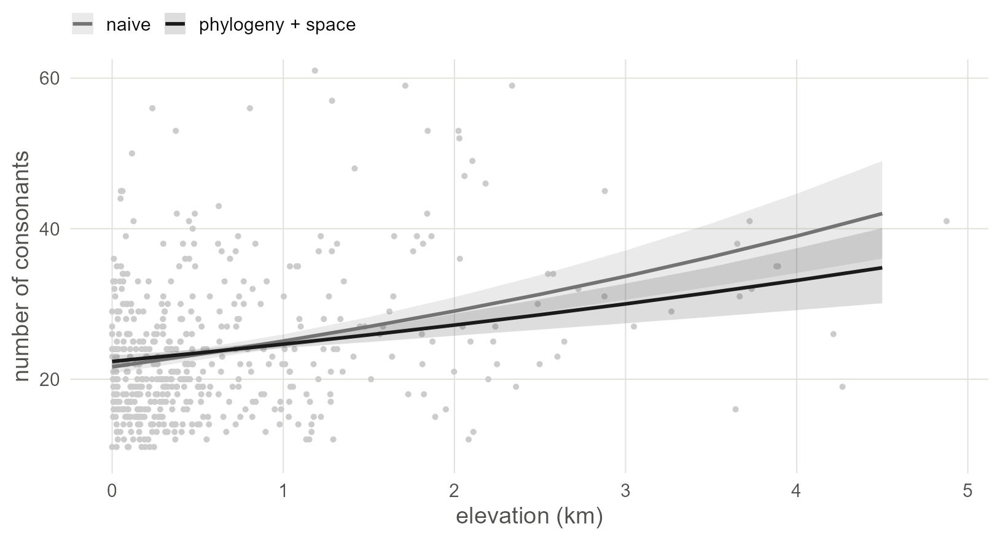
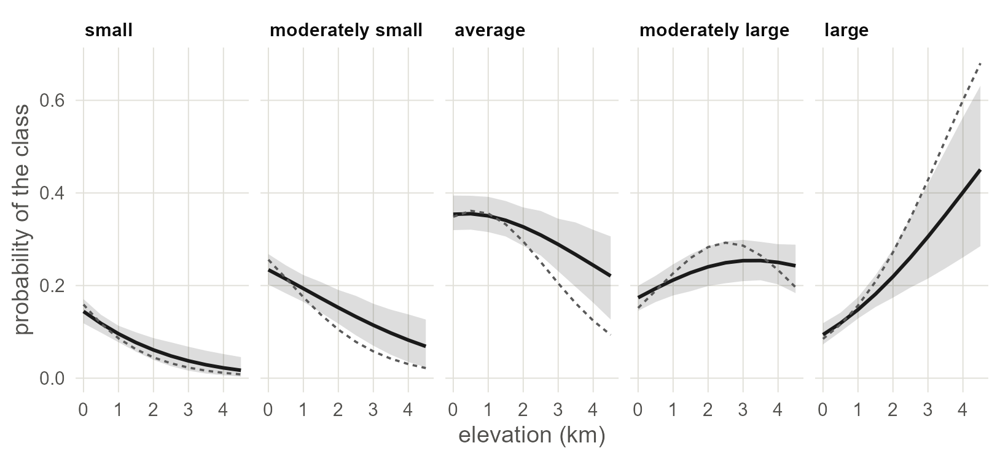
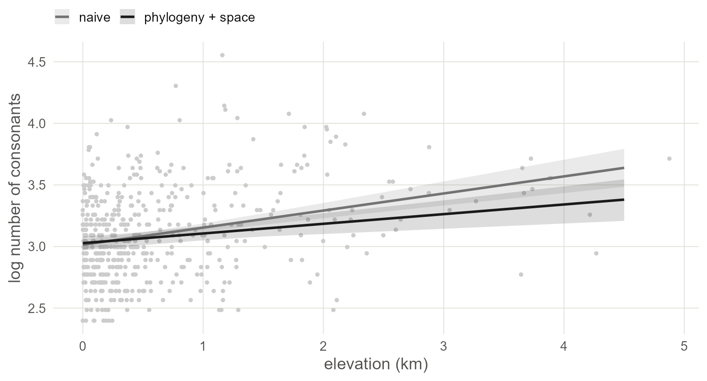

11 Other kinds of outcome
Ejectives are a yes or no. Most typological variables are something else: a count, a set of ordered classes, or a measurement. The dependence terms carry over to a new family, with one exception that shows what they are doing.
11.1 Set up
library(ape)
library(brms)
library(sf)
library(ggplot2)
base <- "https://rehan-muh.github.io/tutorials/data/"
d <- read.csv(paste0(base, "languages.csv"))
tree <- read.tree(paste0(base, "glottolog_tree.nwk"))
d$elev_km <- d$elevation / 1000
A <- vcv(tree, corr = TRUE)
pts <- st_as_sf(d, coords = c("lon", "lat"), crs = 4326)
xy <- st_coordinates(st_transform(pts, "+proj=eqearth")) / 1e6
d$x <- xy[, 1]
d$y <- xy[, 2]
options(mc.cores = 4, brms.backend = "cmdstanr")
dir.create("fits", showWarnings = FALSE)11.2 One model, several families
Every model so far had the same right-hand side: a slope, a term for ancestry and a term for space. What changed between chapters was how those terms were built. This chapter changes the left-hand side. The outcome decides the family, and the family decides the scale on which the slope is read.
| Outcome | Example in the data | family |
The slope is |
|---|---|---|---|
| Yes or no |
ejectives, tone
|
bernoulli() |
a change in log-odds |
| A count | n_consonants |
poisson() |
a change in the log of the expected count |
| Ordered classes | consonant inventory size class | cumulative() |
a change in log-odds of being in a higher class |
| A measurement | log of n_consonants
|
gaussian() |
a change in the outcome itself |
| Unordered classes | a word-order type | categorical() |
one change in log-odds per class |
For a count and for ordered classes the two dependence terms carry over as they are. A continuous outcome needs one change, and the count model shows why on the way there.
The three examples ask one question: do languages at altitude have more consonants? Ejectives are extra consonants, so the question follows from the earlier chapters. The three models use the same information coded three ways.
priors <- prior(normal(0, 1), class = b) +
prior(exponential(1), class = sd) +
prior(exponential(1), class = sdgp)
joint <- function(outcome, family, name,
control = list(adapt_delta = 0.95)) {
f <- paste(outcome, "~ elev_km + (1 | gr(glottocode, cov = A)) +",
"gp(x, y, k = 20, c = 5/4)")
brm(as.formula(f), data = d, data2 = list(A = A),
family = family, prior = priors, control = control,
seed = 1, file = paste0("fits/", name))
}joint() is the model of Chapter 9 with the outcome, the family and the sampler settings left open.
The regression lines need a function that works for any family. posterior_epred() returns the model’s expected value for every language in every posterior draw. Move all 500 languages to one elevation, keep their own lineage and location effects, and average over the sample. This is the averaged line of Chapter 3 without the algebra that was specific to the logit.
grid <- seq(0, 4.5, by = 0.5)
draws <- seq(1, 4000, by = 20) # 200 of the 4,000 draws
averaged <- function(fit) {
sapply(grid, function(km) {
at <- transform(d, elev_km = km)
rowMeans(posterior_epred(fit, newdata = at, draw_ids = draws))
}) # draws by elevations
}
band <- function(p, label) {
data.frame(elev_km = grid, model = label, fit = colMeans(p),
lo = apply(p, 2, quantile, 0.025),
hi = apply(p, 2, quantile, 0.975))
}
two_lines <- function(lines, y) {
ggplot(lines, aes(elev_km, fit, colour = model, fill = model)) +
geom_point(data = d, aes(elev_km, .data[[y]]), inherit.aes = FALSE,
colour = "grey80", size = 0.8) +
geom_ribbon(aes(ymin = lo, ymax = hi), alpha = 0.15, colour = NA) +
geom_line(linewidth = 0.9) +
scale_colour_manual(values = c("grey45", "grey10"),
aesthetics = c("colour", "fill"), name = NULL)
}11.3 A count
The number of consonants is a count, and a count model works with it directly, on the log of the expected count.
Counts usually vary more than a Poisson model allows. The usual remedy is the negative binomial family, which has a shape parameter for the extra variation, and the naive model needs it. The joint model is different. It already has an effect for every language, and that effect takes up whatever variation goes beyond Poisson, so a shape parameter has nothing left to estimate. Fitted to these data with negbinomial(), the joint model sent shape towards infinity in all four chains and the sampler did not converge. The joint model therefore uses poisson(). It also gets adapt_delta = 0.99, because the setting of Chapter 9 leaves a handful of divergent transitions.
naive_c <- MASS::glm.nb(n_consonants ~ elev_km, data = d)
m_count <- joint("n_consonants", poisson(), "o_count",
control = list(adapt_delta = 0.99))
est_c <- rbind(naive = coef(summary(naive_c))["elev_km", 1:2],
joint = fixef(m_count)["elev_km", 1:2])
round(est_c, 3)## Estimate Std. Error
## naive 0.147 0.020
## joint 0.096 0.021The slope is on the log scale, so its exponential is a ratio: each kilometre multiplies the expected number of consonants by that factor.
## Estimate Q2.5 Q97.5
## 1.10 1.06 1.15
pr <- predict(naive_c, newdata = data.frame(elev_km = grid), se.fit = TRUE)
lines_c <- rbind(
data.frame(elev_km = grid, model = "naive", fit = exp(pr$fit),
lo = exp(pr$fit - 1.96 * pr$se.fit),
hi = exp(pr$fit + 1.96 * pr$se.fit)),
band(averaged(m_count), "phylogeny + space"))
two_lines(lines_c, "n_consonants") +
coord_cartesian(ylim = c(10, 60)) +
labs(x = "elevation (km)", y = "number of consonants")
Figure 11.1: Expected number of consonants against elevation: the naive negative binomial regression (grey) and the joint Poisson model averaged over the sample (black), each with a 95% band. The vertical axis stops at 60, and a few inventories are larger.
What this assumes. A Poisson model assumes the variance equals the mean once the model’s effects are taken into account. A model with one latent effect per language has room for extra variation. A model without one, such as a regression with family intercepts only, should use
negbinomial(). If many languages have a count of zero for structural reasons, as with the number of tones or of clicks, usezero_inflated_poisson()orhurdle_poisson(), which model the zeros separately.
11.4 Ordered classes
Typological databases often record a count or a measurement as classes. WALS codes consonant inventories in five: small (6 to 14), moderately small (15 to 18), average (19 to 25), moderately large (26 to 33) and large (34 or more) (Maddieson 2013). Build that variable as an ordered factor.
d$cons_class <- cut(d$n_consonants, breaks = c(0, 14, 18, 25, 33, Inf),
labels = c("small", "moderately small", "average",
"moderately large", "large"),
ordered_result = TRUE)
table(d$cons_class)##
## small moderately small average moderately large
## 59 105 172 95
## large
## 69The classes have an order and no agreed distances between them, so neither a count model nor a model for measurements fits them. The cumulative family assumes a continuous tendency behind the classes, with four thresholds that cut it into five. The slope moves the tendency, and the model estimates the thresholds.
naive_o <- MASS::polr(cons_class ~ elev_km, data = d, Hess = TRUE)
m_ord <- joint("cons_class", cumulative("logit"), "o_ord")
est_o <- rbind(naive = coef(summary(naive_o))["elev_km", 1:2],
joint = fixef(m_ord)["elev_km", 1:2])
round(est_o, 3)## Value Std. Error
## naive 0.696 0.109
## joint 0.980 0.257The ordered model sampled without trouble at the settings of Chapter 9. Its slope is a log-odds, as in the binary models. Each kilometre multiplies the odds of being in a higher class by the exponential of the slope, and by the same factor at each of the four thresholds. That last clause is the assumption of proportional odds. As with the binary models of Chapter 3, a slope from a model with latent effects is not on the scale of a naive slope, so compare each estimate with its own error.
For an ordered outcome the regression line is five lines, one per class. posterior_epred() returns a probability for each class, so the average over the sample is taken class by class.
classes <- levels(d$cons_class)
joint_o <- do.call(rbind, lapply(grid, function(km) {
p <- posterior_epred(m_ord, newdata = transform(d, elev_km = km),
draw_ids = draws) # draws by languages by classes
p <- apply(p, c(1, 3), mean) # draws by classes
data.frame(elev_km = km, class = classes, p = colMeans(p),
lo = apply(p, 2, quantile, 0.025),
hi = apply(p, 2, quantile, 0.975))
}))
naive_p <- predict(naive_o, newdata = data.frame(elev_km = grid),
type = "probs") # elevations by classes
naive_lines <- data.frame(elev_km = rep(grid, times = 5),
class = rep(classes, each = length(grid)),
p = as.vector(naive_p))
joint_o$class <- factor(joint_o$class, levels = classes)
naive_lines$class <- factor(naive_lines$class, levels = classes)
ggplot(joint_o, aes(elev_km, p)) +
geom_ribbon(aes(ymin = lo, ymax = hi), fill = "grey10", alpha = 0.15) +
geom_line(colour = "grey10", linewidth = 0.9) +
geom_line(data = naive_lines, linetype = "22", colour = "grey35") +
facet_wrap(~class, nrow = 1) +
labs(x = "elevation (km)", y = "probability of the class")
Figure 11.2: Probability of each consonant inventory class against elevation: the joint model averaged over the sample, with its 95% band (black), and the naive ordered regression (dashed grey).
The two models agree in the lowlands. At 4.5 km the naive model puts 68 per cent of languages in the large class. The joint model puts 45 per cent there, and its band is wide.
Watch out. Coding a count as classes throws information away, and the class boundaries are a convention. If you have the count, model the count. Use the ordered model when classes are all the database gives you, or when the variable was ordinal to begin with, such as a scale of morphological complexity.
11.5 A continuous outcome
Take the log of the consonant count and treat it as a measurement.
A Gaussian model has a parameter the other families lack: a residual standard deviation, sigma, for what is left to each language. The count model showed what happens when a model has two places for the same variation, and it happens again here. In this tree every language sits at the end of its own branch, so the lineage effects already contain an independent part for each language, and sigma asks for a second one. Calling joint() with gaussian() ran for an hour on these data and did not converge. The draws of sigma wandered between its estimate and zero, and its Rhat was 1.86.
The remedy is to let the tree describe the residuals themselves. fcor(A) tells brms that the residuals have covariance sigma^2 * A, so the residuals of related languages are correlated and no separate lineage effect is needed. This is the phylogenetic regression of Chapter 4, with the Gaussian process added for space.
A <- A[d$glottocode, d$glottocode] # fcor() matches rows by position
p_gauss <- prior(normal(0, 1), class = b) +
prior(exponential(1), class = sigma) +
prior(exponential(1), class = sdgp)
m_gauss <- brm(log_cons ~ elev_km + fcor(A) + gp(x, y, k = 20, c = 5/4),
data = d, data2 = list(A = A), family = gaussian(),
prior = p_gauss, control = list(adapt_delta = 0.95),
seed = 1, file = "fits/o_gauss")
est_g <- rbind(naive = coef(summary(naive_g))["elev_km", 1:2],
joint = fixef(m_gauss)["elev_km", 1:2])
round(est_g, 3)## Estimate Std. Error
## naive 0.139 0.02
## joint 0.078 0.02Run time. This is the slowest model in the book, because the 500 by 500 matrix enters every step of the sampler. It took 90 minutes on a machine that was busy with other work. Its 4,000 draws included 15 divergent transitions, so raise
adapt_deltato 0.99 before you report a model like it. INLA and mgcv fit a continuous outcome in seconds, and the last section of this chapter says how.
With a Gaussian family the slope is in the units of the outcome: the change in log consonants per kilometre. The naive and joint slopes are on one scale and can be compared directly, which was not true of the logistic models. Here the joint slope is 0.078 against a naive 0.139. Part of what the naive model credited to elevation, the joint model credits to lineages and regions with large inventories that happen to sit high up. The slope that remains is 3.9 times its error.
sds <- c("sigma", "sdgp_gpxy")
round(posterior_summary(m_gauss, variable = sds)[, c(1, 3, 4)], 2)## Estimate Q2.5 Q97.5
## sigma 0.32 0.30 0.34
## sdgp_gpxy 0.27 0.14 0.58Both are in log consonants. sigma is now the standard deviation of residuals that follow the tree, each language’s own branch included, and sdgp is that of the surface.
pr <- predict(naive_g, newdata = data.frame(elev_km = grid), se.fit = TRUE)
lines_g <- rbind(
data.frame(elev_km = grid, model = "naive", fit = pr$fit,
lo = pr$fit - 1.96 * pr$se.fit, hi = pr$fit + 1.96 * pr$se.fit),
band(averaged(m_gauss), "phylogeny + space"))
two_lines(lines_g, "log_cons") +
labs(x = "elevation (km)", y = "log number of consonants")
Figure 11.3: Log consonant inventory size against elevation: the naive regression line (grey) and the joint model’s line averaged over the sample (black), each with a 95% band. Dots are the 500 languages.
The joint line is flatter than the naive one and its band is about as wide. In the binary models of the earlier chapters the controls mostly widened the interval. Here they mostly lowered the slope.
11.6 The three codings side by side
The same question was asked three ways. The slopes are on different scales, so compare the ratio of each estimate to its error.
ratios <- data.frame(
outcome = c("count", "ordered classes", "continuous (log)"),
naive = c(est_c[1, 1] / est_c[1, 2], est_o[1, 1] / est_o[1, 2],
est_g[1, 1] / est_g[1, 2]),
joint = c(est_c[2, 1] / est_c[2, 2], est_o[2, 1] / est_o[2, 2],
est_g[2, 1] / est_g[2, 2]))
ratios$naive <- round(ratios$naive, 1)
ratios$joint <- round(ratios$joint, 1)
ratios## outcome naive joint
## 1 count 7.4 4.5
## 2 ordered classes 6.4 3.8
## 3 continuous (log) 6.9 3.9In all three codings the ratio falls by about two fifths once ancestry and geography are in the model, and in all three the slope stays about four times its error. The count model and the continuous model both put the slope on a log scale, and they give 0.096 and 0.078.
So languages at altitude do tend to have more consonants than their relatives and neighbours lower down, whichever way the inventory is coded. The joint Poisson model puts the increase at about 10 per cent per kilometre.
11.7 Unordered classes
For classes with no order, such as basic word order, the family is categorical(). One class is the reference. Every other class gets its own slope and its own copy of each dependence term, and each slope is a log-odds against the reference. The sample file has no such variable, so there is no worked example here. The formula does not change:
brm(word_order ~ elev_km + (1 | gr(glottocode, cov = A)) +
gp(x, y, k = 20, c = 5/4),
data = d, data2 = list(A = A), family = categorical())With five classes that is four sets of lineage effects and four surfaces, so the model is slow and needs many languages per class. If a class has only a handful of languages, merge it with a neighbour or code the question as a yes or no.
11.8 Other engines
The same families exist in the fast engines.
| Outcome | mgcv | INLA |
|---|---|---|
| Yes or no | family = binomial |
family = "binomial" |
| Continuous | family = gaussian |
family = "gaussian" |
| Count |
family = poisson or nb()
|
family = "poisson" or "nbinomial"
|
| Ordered | family = ocat(R = 5) |
family = "pom" |
The smooths and f() terms of Chapters 4, 8 and 10 go into these models, and both engines fit a continuous outcome in seconds. ocat() wants the classes as the integers 1 to 5, so pass as.integer(d$cons_class).
The overlap between the residual and the lineage effects does not depend on the engine. In INLA the counterpart of fcor() is to fix the residual precision at a large value, with control.family = list(hyper = list(prec = list(initial = 10, fixed = TRUE))), so that the lineage effects carry all the variation between languages.
With your own data. Choose the family from how the variable was measured, before looking at how it is distributed. Then run
pp_check(fit), which overlays data simulated from the model on the real data. If the simulated data do not have the shape of your outcome, change the family before you read the slope.
11.9 What to carry forward
- The dependence terms
(1 | gr(glottocode, cov = A))andgp(x, y, k = , c = 5/4)go into a count model or an ordered model unchanged. -
poisson()for counts,cumulative()for ordered classes,gaussian()for measurements,categorical()for unordered ones,bernoulli()for yes or no. - A model with an effect for every language has no room for a second term at the level of the language. Use
poisson()and notnegbinomial(), and for a continuous outcome put the tree into the residuals withfcor(A). - With
gaussian()the slopes of different models share a scale. With the other families they do not, so compare each estimate with its own error. -
posterior_epred()on the sample moved to one elevation gives a regression line for any family.
Chapter 12 turns from models to the older alternative, a balanced sample.
11.10 Further reading
How earlier studies handled outcome types. Cross-linguistic studies have mostly recoded their variables to fit the tools at hand: counts were logged and treated as continuous, and classes were merged into a yes or no. Skirgård et al. (2023) turn Grambank’s multi-state features into binary ones before fitting. The phylogenetic comparative literature treats categorical outcomes inside the mixed model (Hadfield and Nakagawa 2010; Villemereuil and Nakagawa 2014).
- Ordered outcomes. Bürkner and Vuorre (2019) is a tutorial on ordinal models in brms. It covers the alternatives to the cumulative family and how to relax proportional odds.
- Checking the family. Gabry et al. (2019) show posterior predictive checks at work.
- Newer spatial models for discrete data. Three recent items from spatial statistics: a thesis on Bayesian spatial models for discrete data (Carter 2024), a negative binomial model for zero-inflated counts in space and time (Majumder et al. 2026), and a method for many spatial outcomes of mixed types at once (Mukherjee et al. 2026). A typologist with many features of different types should watch the last of these.